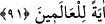
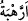
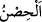
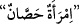

dilediğine de vermez. “ ise sakınma ve tedirginlikle birlikte olan korkudur.
“Onlar, bize karşı derin saygı içindeydiler.” Korkarak ve tevâzû içinde bize ibadet
ederlerdi. “Huşû” genellikle uzuvlarda görülen sükûnet için kullanılır. Ancak
peygamberlerin huşûunu sâdece zâhirde görülen halleriyle sınırlamak doğru değildir.
Onların huşûu, hem kalbde hem de bedende birlikte olan kâmil bir huşûdur.
Kalbinde ihlâs ve Allah korkusu olmadan kuru ekmek yemek, sert (kaba) elbise
giymek ve başını öne eğmek, riyâkâr ve yapmacık davrananların sıfatıdır.
Cihanda ün kazanmak istersen
Kılık kıyafetini süsle varsın için ot olsun
Bana göre gece gidip yol kesen bir insan
Âbid ve zahid kıyafetli fâsıktan iyidir
Hor ve hakir bir kula ne değer katar
Elbisesi altında alacalı bir vücudu var
Yâni o peygamberler ne elde ettilerse bu güzel hasletlere sâhip oldukları için elde
ettiler. Taleb ettiği şey konusunda duâsının kabul edilmesini dileyen; onların yaptıkları
gibi yapsın ve bu ahlâk ile ahlâklansın.
91. Irzını iffetle korumuş olanı (Meryem’i de an.) Biz ona ruhumuzdan üfledik;
onu ve oğlunu cümle âlem için bir ibret kıldık.
“Irzını iffetle korumuş olanı (Meryem’i de an.)” Burada kasd edilen İmran kızı
Meryem’dir.
“ aslında içine ulaşılamayan her muhkem yere denir. Sonra korunan şey için
kullanılmıştır.  iffetli veya evli kadın demektir.
Yâni ırzını haram ve helâl bütün münâsebetlerden koruyan Meryem’in haberini de an.
O, kendi nefsini pak tuttu, hiç kimsenin eli onun iffet ve namusuna uzanmadı.
İmam Süheylî (r.h.) şöyle der: “Âyette “ferc” kelimesiyle Hz. Meryem’in elbisesinin
yırtığı murad edilmiştir. Bu, onun elbisesine asla şüphe ilişmedi demektir. Yâni,
elbisesi tertemiz bir insandı.
Elbisenin dört yırtığı vardır: Yenleri, altı ve üstü. Burada bunun dışında bir şey
vehmetme. Çünkü âyette latif bir kinâye vardır.”
“Biz ona ruhumuzdan üfledik;” yâni Îsâ’yı onun karnında dirilttik. Ona, emrimizden
olan rûhdan üfledik.
Bu ifâdede benzetme (teşbih) vardır. Yoksa ruhun bedene, bir şeyin içine üfleyenin